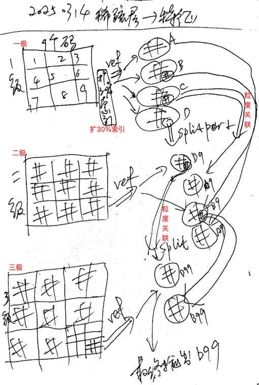
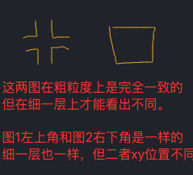
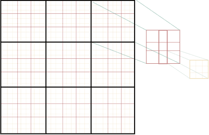
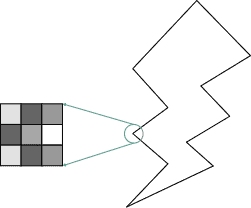

AI系列之《2025.03-04：多码特征体系成形》

来源：HELIX_THEORY/手稿/assets/734_稀疏码到特征.png

来源：HELIX_THEORY/手稿/assets/735_特征中的多码表征分析.png

来源：HELIX_THEORY/手稿/assets/752_多粒度.png

来源：HELIX_THEORY/手稿/assets/754_组码到特征.png
来源：Note34.md
3 到 4 月，研究重心明显转向视觉特征：多码特征计划、感官算法、感官模型、组码表征、特征表征、识别、类比、组码索引、局部特征向似层找整体特征、遮挡噪点不全识别，以及显著度。
多码特征的意义，是让视觉不再依赖单一粒度或单一编码。感官输入先形成组码，再形成特征，之后进入识别与类比。局部特征向整体特征的查找，则让局部线索可以激活更大结构。
这一阶段的多轮回测，把特征从抽象、识别、准确度、SP 稳定性一路打通。到 4 月底，显著度被纳入认知特征细节，说明视觉系统开始关心哪些特征更值得注意。